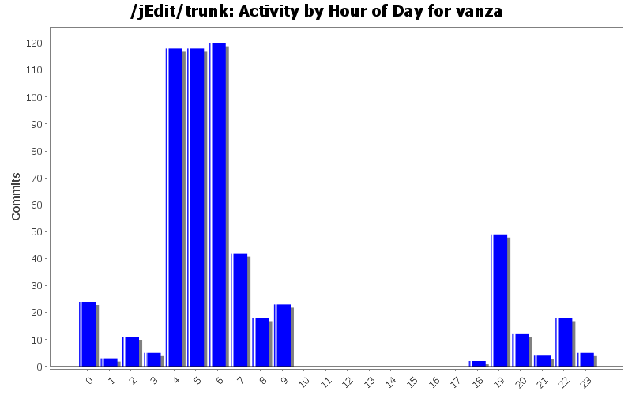
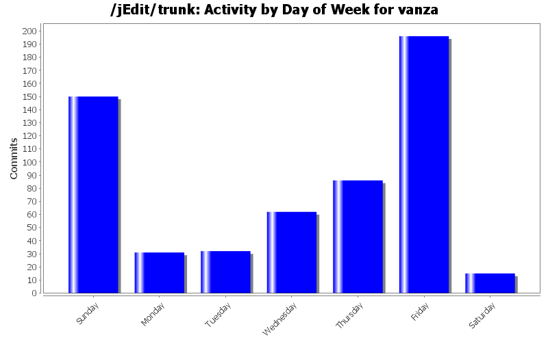
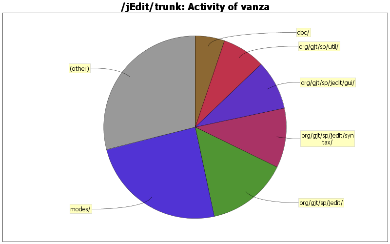

| Directory | Changes | Lines of Code | Lines per Change |
|---|---|---|---|
| Totals | 572 (100.0%) | 10255 (100.0%) | 17.9 |
| modes/ | 239 (41.8%) | 2506 (24.4%) | 10.4 |
| org/gjt/sp/jedit/ | 77 (13.5%) | 1475 (14.4%) | 19.1 |
| org/gjt/sp/jedit/syntax/ | 34 (5.9%) | 1078 (10.5%) | 31.7 |
| org/gjt/sp/jedit/gui/ | 11 (1.9%) | 900 (8.8%) | 81.8 |
| org/gjt/sp/util/ | 14 (2.4%) | 786 (7.7%) | 56.1 |
| doc/ | 61 (10.7%) | 537 (5.2%) | 8.8 |
| org/gjt/sp/jedit/browser/ | 7 (1.2%) | 483 (4.7%) | 69.0 |
| org/gjt/sp/jedit/indent/ | 24 (4.2%) | 342 (3.3%) | 14.2 |
| org/gjt/sp/jedit/buffer/ | 15 (2.6%) | 340 (3.3%) | 22.6 |
| org/gjt/sp/jedit/io/ | 11 (1.9%) | 284 (2.8%) | 25.8 |
| org/gjt/sp/jedit/options/ | 10 (1.7%) | 258 (2.5%) | 25.8 |
| org/gjt/sp/jedit/search/ | 19 (3.3%) | 214 (2.1%) | 11.2 |
| bsh/ | 1 (0.2%) | 202 (2.0%) | 202.0 |
| org/gjt/sp/jedit/menu/ | 4 (0.7%) | 161 (1.6%) | 40.2 |
| org/gjt/sp/jedit/pluginmgr/ | 10 (1.7%) | 153 (1.5%) | 15.3 |
| jars/MacOS/macos/ | 2 (0.3%) | 110 (1.1%) | 55.0 |
| org/gjt/sp/jedit/textarea/ | 12 (2.1%) | 105 (1.0%) | 8.7 |
| org/gjt/sp/jedit/msg/ | 4 (0.7%) | 86 (0.8%) | 21.5 |
| doc/users-guide/ | 5 (0.9%) | 74 (0.7%) | 14.8 |
| org/gjt/sp/jedit/bufferio/ | 3 (0.5%) | 59 (0.6%) | 19.6 |
| / | 2 (0.3%) | 44 (0.4%) | 22.0 |
| doclet/ | 2 (0.3%) | 28 (0.3%) | 14.0 |
| org/gjt/sp/jedit/help/ | 2 (0.3%) | 23 (0.2%) | 11.5 |
| installer/ | 1 (0.2%) | 4 (0.0%) | 4.0 |
| jars/MacOS/ | 1 (0.2%) | 2 (0.0%) | 2.0 |
| macros/Interface/ | 1 (0.2%) | 1 (0.0%) | 1.0 |

Fix AWT thread-safety issue in VFSManager.error().
JOptionPane.getFrameForComponent(comp) can cause a deadlock if called
from a thread that is not the EDT. So fix that.
36 lines of code changed in 1 file:
Scala mode enhancements.
- s, f and raw string interpolators
- XML highlighting
Note XML highlighting cannot (at least in any way I can figure out)
properly parse attributes.
65 lines of code changed in 1 file:
Scala mode: cleanup and fix indentation.
Also add a few simple highlighting enhancements.
289 lines of code changed in 1 file:
Some improvements to the jamon mode.
51 lines of code changed in 1 file:
Very crude Jamon template highlighting support.
89 lines of code changed in 2 files:
Better (and more correct) highlighting of python decorators.
5 lines of code changed in 1 file:
Add avro idl mode file.
111 lines of code changed in 2 files:
Add a 'break' for correctness.
1 lines of code changed in 1 file:
Fix GenerateTocXML to compile under Java 7.
Seems to work just like before.
27 lines of code changed in 1 file:
Make org.gjt.sp.jedit.browser.VFSFileNameField public.
11 lines of code changed in 2 files:
Encoding mix up: fix Vampire's name.
1 lines of code changed in 1 file:
De-reference symlinks when getting file permissions (bug 3160310).
So that when saving a file, the original file's permissions are not
overwritten.
22 lines of code changed in 2 files:
Don't overwrite user properties when loading mode catalog.
This is a workaround for SF Bug 3023175. When first loading the mode
catalog, do not overwrite the mode's properties in the user settings,
so that the user's settings can correctly override the default properties
in the catalog.
27 lines of code changed in 1 file:
Remove dependency on jEdit class from Chunk.java.
Read config data through IPropertyManager instead. Also
call Chunk.propertiesChanged() from the StandaloneTextArea
implementation.
50 lines of code changed in 4 files:
Fix xToOffset(), again.
Fix the logic so it's closer to the previous version of the code,
but, mainly, account for the offset of the current chunk when
calculating the offset of the requested position inside the chunk.
19 lines of code changed in 1 file:
Fix Chunk.xToOffset().
4 lines of code changed in 1 file:
Clean up existing font config before saving new list.
9 lines of code changed in 1 file:
Add new option to perform font substitution in the text area.
This will cause the text rendering code to choose appropriate
fonts to display characters the current font can't. It's off
by default, and can be turned on along with a list of preferred
fonts in the text area option pane.
This required minor changes in other areas:
. make the FontSelectorDialog class public so it can be
used from the new code in the text area option pane.
. small change to clean the font cache in the Chunk
class was added to TextArea.java.
840 lines of code changed in 7 files:
. Make EditBus messages always be delivered on the AWT thread. Also add
EditBus.sendAsync(), which just queues delivery and returns immediately.
. Allow EditBus.EBHandler to annotate classes; only useful for EditPlugin
instances, makes them behave as if they implemented EBPlugin.
102 lines of code changed in 3 files:
Modify the EditBus so that it can dispatch messages just to handlers interested in the specific message being sent.
Summary: handler method is annotated with special annotation provided by the EditBus class; signature of the method defines what messages will be delivered to it. More details in the javadoc.
This should make EBMessage handling code cleaner since there's no more need to do "instanceof" to figure out the type of the message being delivered.
Nothing changes in the behavior for existing EBComponent objects.
296 lines of code changed in 2 files:
(139 more)